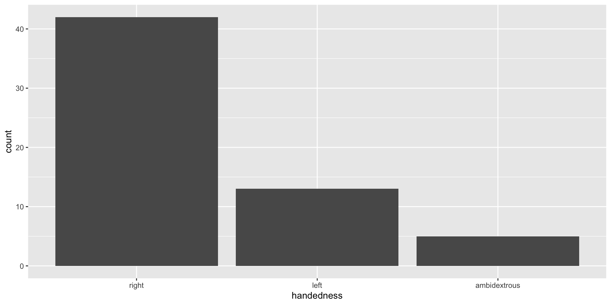
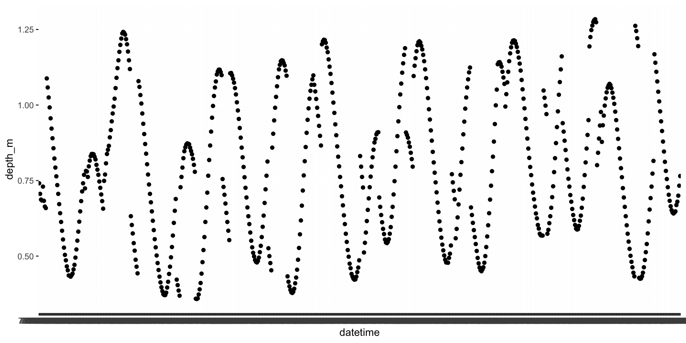

[1] BS MS PhD MS
Levels: BS MS PhDData classes
Environmental Data Analysis and Visualization
Data classes
We’ve talked about types so far, next we’ll introduce the concept of classes
Vectors are like Lego building blocks
We stick them together to build more complicated constructs, e.g. representations of data
The class attribute relates to the S3 class of an object which determines its behaviour
- You don’t need to worry about what S3 classes really mean, but you can read more about it here if you’re curious
Examples: factors, dates, and data frames
Factors
R uses factors to handle categorical variables, variables that have a fixed and known set of possible values
More on factors
We can think of factors like character (level labels) and an integer (level numbers) glued together
Dates
More on dates
We can think of dates like an integer (the number of days since the origin, 1 Jan 1970) and an integer (the origin) glued together
Data frames
We can think of data frames like like vectors of equal length glued together
Lists
Lists are a generic vector container. Vectors of any type can go in them.
Lists and data frames
- A data frame is a special list containing vectors of equal length
- When we use the
pull()function, we extract a vector from the data frame
Working with factors
The data are read data in as character strings
Defaut plot of “handedness” counts

Use the forcats package to manipulate factors
Come for the functionality
… stay for the logo

Why use factors?
- Factors are useful when you have true categorical data and you want to override the ordering of character vectors to improve display
- They are also useful in modeling scenarios
- The forcats package provides a suite of useful tools that solve common problems with factors
AE-08
AE 08 - data types and classes > forcats.Rmd
Working with dates
Make a date

lubridate is the tidyverse-friendly package that makes dealing with dates easier
It’s not one of the core tidyverse packages: it’s installed with
install.packages("tidyverse)but it’s not loaded with it and needs to be explicitly loaded withlibrary(lubridate)
We’re just going to scratch the surface of working with dates in R here…
Dates and times in R
A date. Tibbles print this as <
date>.A time within a day. Tibbles print this as
<time>.A date-time is a date plus a time: it uniquely identifies an instant in time (typically to the nearest second). Tibbles print this as
<dttm>. Elsewhere in R these are called POSIXct, but I don’t think that’s a very useful name.
When you read in data, check data types
# A tibble: 672 × 10
date time datetime depth_m salinity_ppt ph do_mg_l turb_ntu chl_ug_l
<chr> <time> <chr> <dbl> <dbl> <dbl> <dbl> <dbl> <dbl>
1 7/1/15 00:00:24 7/1/15 … 0.741 0.12 8.53 10.2 1.9 4.3
2 7/1/15 00:15:24 7/1/15 … 0.706 0.12 8.45 9.91 2 3.8
3 7/1/15 00:30:24 7/1/15 … 0.687 0.12 8.38 9.68 1.9 4.3
4 7/1/15 00:45:24 7/1/15 … 0.684 0.12 8.29 9.47 2 4.3
5 7/1/15 01:00:23 7/1/15 … 0.73 0.12 7.94 8.49 6.1 10.7
6 7/1/15 01:15:24 7/1/15 … 0.683 0.12 7.67 7.9 6.1 11.6
7 7/1/15 01:30:24 7/1/15 … 0.664 0.12 7.75 8.07 5.3 20.7
8 7/1/15 01:45:24 7/1/15 … 0.659 0.12 7.78 8.02 4.8 5.5
9 7/1/15 02:00:24 7/1/15 … 0.724 0.12 7.81 8 4.5 5.1
10 7/1/15 02:15:24 7/1/15 … 0.782 0.12 7.76 7.88 3.9 27.4
# ℹ 662 more rows
# ℹ 1 more variable: t_c <dbl>When you read in data, check data types
# A tibble: 672 × 10
date time datetime depth_m salinity_ppt ph do_mg_l turb_ntu chl_ug_l
<chr> <time> <chr> <dbl> <dbl> <dbl> <dbl> <dbl> <dbl>
1 7/1/15 00'24" 7/1/15 0:00 0.741 0.12 8.53 10.2 1.9 4.3
# ℹ 671 more rows
# ℹ 1 more variable: t_c <dbl>datewas read in as a charactertimewas read in as a timedatetimewas read in as a character
Why is this a problem?
Using the lubridate functions
Lubridateworks out the date/time format once you specify the order of componentsIdentify the order in which year, month, and day appear in your dates
Then arrange “y”, “m”, and “d” (year, month, day) and “h”, “m”, and “s” (hour, minute, second) in the same order.
That gives you the name of the
lubridatefunction that will parse your date.The resulting output is always in yyyy-mm-dd format
Using the lubridate functions
Coerce flats data into dates and datetimes
# A tibble: 672 × 10
date time datetime depth_m salinity_ppt ph do_mg_l
<date> <time> <dttm> <dbl> <dbl> <dbl> <dbl>
1 2015-07-01 00:00:24 2015-07-01 00:00:00 0.741 0.12 8.53 10.2
2 2015-07-01 00:15:24 2015-07-01 00:15:00 0.706 0.12 8.45 9.91
3 2015-07-01 00:30:24 2015-07-01 00:30:00 0.687 0.12 8.38 9.68
4 2015-07-01 00:45:24 2015-07-01 00:45:00 0.684 0.12 8.29 9.47
5 2015-07-01 01:00:23 2015-07-01 01:00:00 0.73 0.12 7.94 8.49
6 2015-07-01 01:15:24 2015-07-01 01:15:00 0.683 0.12 7.67 7.9
7 2015-07-01 01:30:24 2015-07-01 01:30:00 0.664 0.12 7.75 8.07
8 2015-07-01 01:45:24 2015-07-01 01:45:00 0.659 0.12 7.78 8.02
9 2015-07-01 02:00:24 2015-07-01 02:00:00 0.724 0.12 7.81 8
10 2015-07-01 02:15:24 2015-07-01 02:15:00 0.782 0.12 7.76 7.88
# ℹ 662 more rows
# ℹ 3 more variables: turb_ntu <dbl>, chl_ug_l <dbl>, t_c <dbl>Now it knows the dates are actually datetimes

What if your data contain year, month, day, etc. in separate columns?
# A tibble: 672 × 4
year month day depth_m
<chr> <chr> <chr> <dbl>
1 7 1 15 0.741
2 7 1 15 0.706
3 7 1 15 0.687
4 7 1 15 0.684
5 7 1 15 0.73
6 7 1 15 0.683
7 7 1 15 0.664
8 7 1 15 0.659
9 7 1 15 0.724
10 7 1 15 0.782
# ℹ 662 more rowsWhat if your data contain year, month, day, etc. in separate columns?
Use the make_date() or make_datetime functions!
# A tibble: 672 × 2
date depth_m
<date> <dbl>
1 0007-01-15 0.741
2 0007-01-15 0.706
3 0007-01-15 0.687
4 0007-01-15 0.684
5 0007-01-15 0.73
6 0007-01-15 0.683
7 0007-01-15 0.664
8 0007-01-15 0.659
9 0007-01-15 0.724
10 0007-01-15 0.782
# ℹ 662 more rowsWhat if you want to get individual components of date/time data?
Use the year(), month(), mday() (day of the month), yday() (day of the year, also known as julian day), wday() (day of the week), hour(), minute() or second() functions